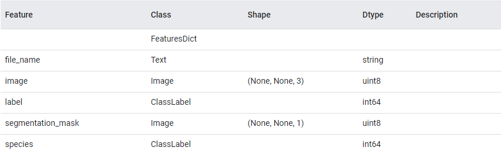
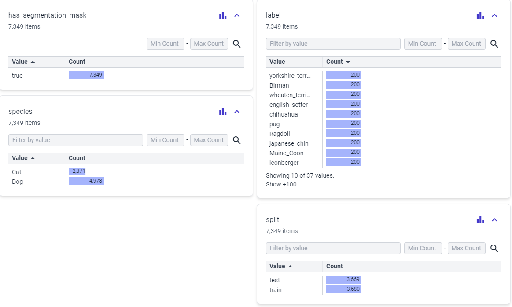
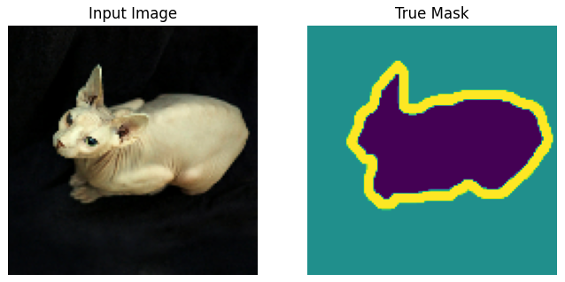
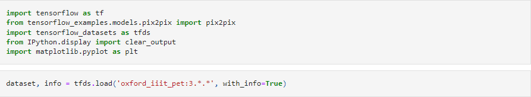
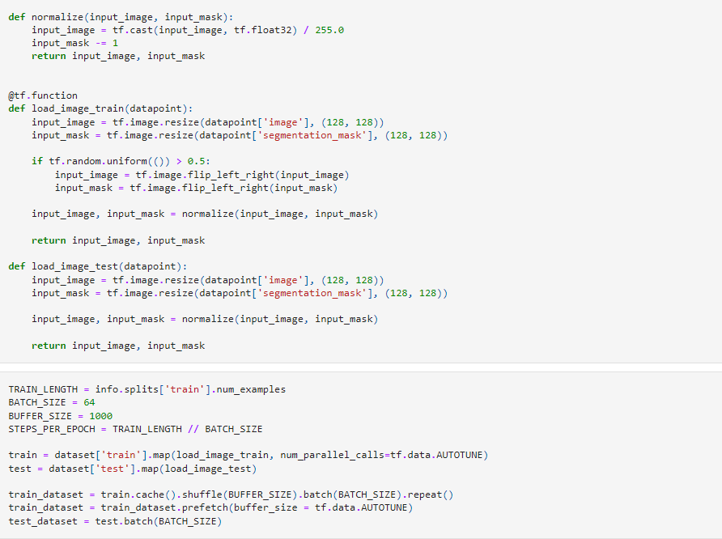
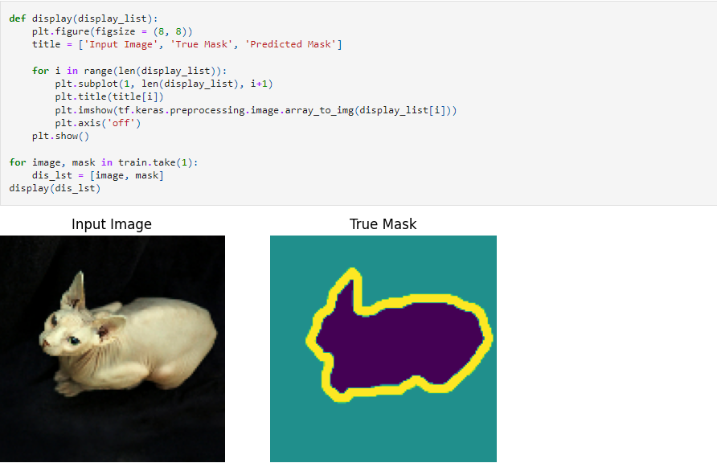
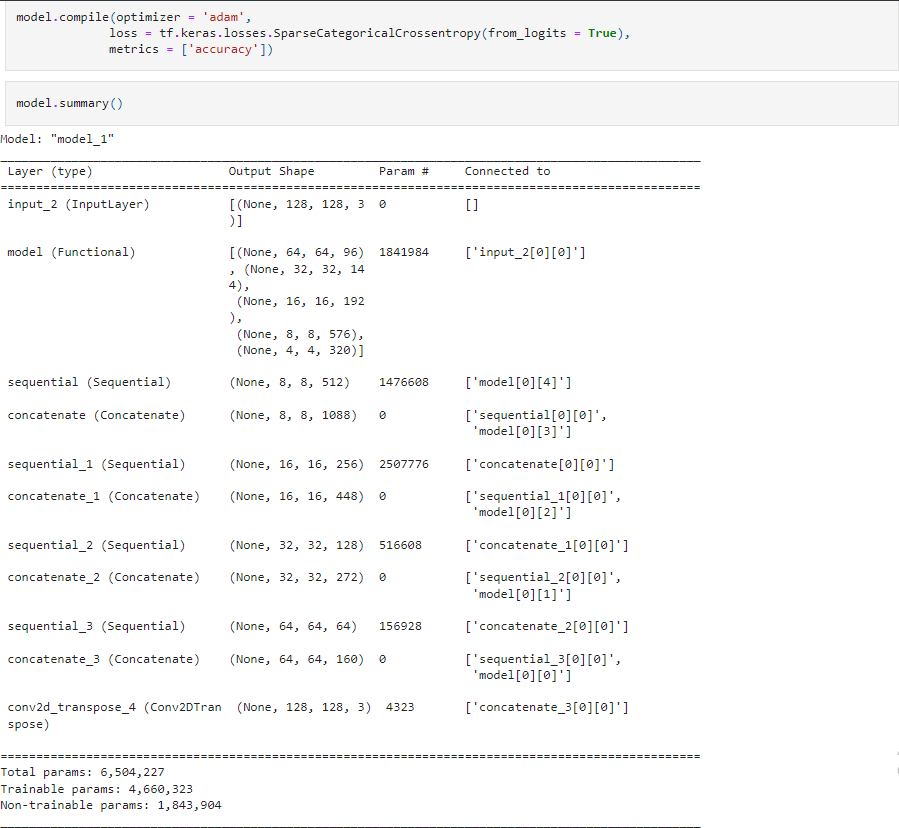
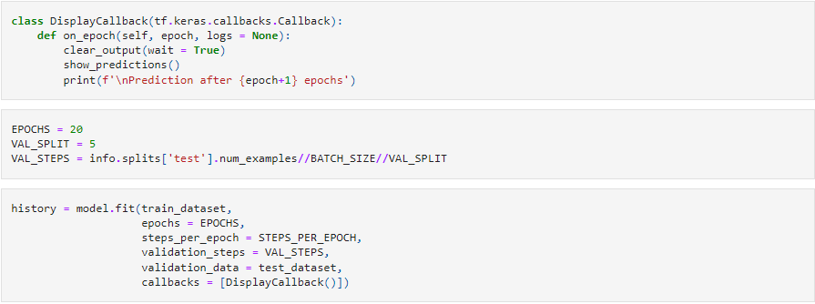
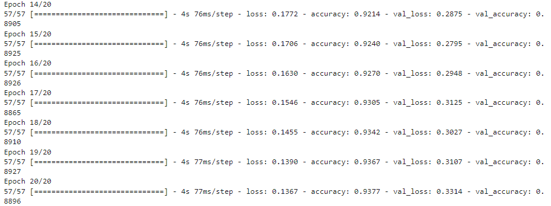

Aditya Singh

Introduction
Image segmentation is a computer vision task that involves dividing an image into meaningful and semantically coherent regions or segments. The goal is to partition an image into regions that share similar visual properties, such as color, texture, or intensity, while being distinct from surrounding areas. Image segmentation is a crucial step in many computer vision applications, including object recognition, scene understanding, and medical image analysis.
To build the U-Net for image segmentation, I have used the MobileNetV2 model for encoding (or down-sampling) and the Pix2Pix model for decoding (or up-sampling).
U-NET Architecture
The U-Net architecture is a convolutional neural network (CNN) designed for semantic segmentation tasks, where the goal is to partition an image into distinct regions and assign each pixel to a specific class. U-Net was introduced by Olaf Ronneberger, Philipp Fischer, and Thomas Brox in 2015 and has since become a popular choice for biomedical image segmentation and other applications.
The U-Net architecture is characterized by a U-shaped structure, which consists of a contracting path, a bottleneck, and an expansive path. Here's a breakdown of its key components:
Contracting Path (Encoder):
The input image is processed through a series of convolutional and pooling layers, reducing spatial dimensions while increasing the number of feature channels. Each convolutional layer is typically followed by rectified linear unit (ReLU) activation functions to introduce non-linearity.Bottleneck:
At the center of the U-Net is the bottleneck, which consists of several convolutional layers. This stage captures high-level semantic information from the input image.Expansive Path (Decoder):
The expansive path consists of up-sampling and convolutional layers to gradually increase spatial resolution. Skip connections, or concatenation operations, are introduced between corresponding layers in the contracting and expansive paths. These skip connections help to retain fine-grained details during the up-sampling process.Final Layer:
The final layer typically employs a 1x1 convolution to produce the segmentation mask with the same spatial dimensions as the input image. The output values represent the likelihood or probability of each pixel belonging to a particular class.

MobileNetV2
A lightweight convolutional neural network (CNN) architecture, MobileNetV2, is specifically designed for mobile and embedded vision applications. Google researchers developed it as an enhancement over the original MobileNet model. Another remarkable aspect of this model is its ability to strike a good balance between model size and accuracy, rendering it ideal for resource-constrained devices.
Architecture
The architecture of MobileNetV2 consists of a series of convolutional layers, followed by depthwise separable convolutions, inverted residuals, bottleneck design, linear bottlenecks, and squeeze-and-excitation (SE) blocks. These components work together to reduce the number of parameters and computations required while maintaining the model's ability to capture complex features.
Depthwise Separable Convolution :
Depthwise separable convolution is a technique used in MobileNetV2 to reduce the computational cost of convolutions. It separates the standard convolution into two separate operations: depthwise convolution and pointwise convolution. This separation significantly reduces the number of computations required, making the model more efficient.Inverted Residuals :
Inverted residuals are a key component of MobileNetV2 that helps improve the model's accuracy. They introduce a bottleneck structure that expands the number of channels before applying depthwise separable convolutions. This expansion allows the model to capture more complex features and enhance its representation power.Bottleneck Design :
The bottleneck design in MobileNetV2 further reduces the computational cost by using 1x1 convolutions to reduce the number of channels before applying depthwise separable convolutions. This design choice helps maintain a good balance between model size and accuracy.Linear Bottlenecks :
Linear bottlenecks are introduced in MobileNetV2 to address the issue of information loss during the bottleneck process. By using linear activations instead of non-linear activations, the model preserves more information and improves its ability to capture fine-grained details.Squeeze-and-Excitation (SE) Blocks :
Squeeze-and-excitation (SE) blocks are added to MobileNetV2 to enhance its feature representation capabilities. These blocks adaptively recalibrate the channel-wise feature responses, allowing the model to focus on more informative features and suppress less relevant ones.
Pix2Pix
Pix2Pix, short for "Image-to-Image Translation with Conditional Adversarial Networks," is a generative adversarial network (GAN) architecture designed for image-to-image translation tasks. It was introduced by Phillip Isola, Jun-Yan Zhu, Tinghui Zhou, and Alexei A. Efros in 2017. Pix2Pix is particularly well-known for its ability to transform images from one domain to another, often producing realistic and high-quality results.
Pix2Pix decoder (up-sampler)
Pix2Pix employs a U-Net-like architecture for its generator, where the decoder (or up-sampler) is responsible for reconstructing the output image from the features extracted by the encoder. The decoder is crucial in restoring the spatial resolution of the image after it has been down-sampled by the encoder. Here are the key features of the Pix2Pix decoder:
Skip Connections:
One distinctive characteristic of Pix2Pix's decoder is the use of skip connections, also known as skip or residual connections. These connections link corresponding layers in the encoder and decoder. They help in preserving fine details and spatial information that might be lost during down-sampling.Up-sampling Layers:
The up-sampling layers in the decoder are responsible for increasing the spatial resolution of the features obtained from the encoder. Common up-sampling techniques include transposed convolutions (also known as deconvolutions or fractionally strided convolutions) or nearest-neighbor up-sampling followed by regular convolutions.Convolutional Layers:
Convolutional layers within the decoder process the up-sampled features, extracting and refining information to generate the final output. These layers may include batch normalization and activation functions (e.g., ReLU) to introduce non-linearity.Output Layer:
The final layer of the decoder produces the output image. It often uses a convolutional layer with an appropriate activation function (e.g., Tanh for pixel values in the range [-1, 1]).L1 Loss Integration:
The output of the decoder is compared to the ground truth using an L1 loss (pixel-wise loss). This loss encourages the generated image to closely match the target domain at the pixel level.Training with Adversarial Loss:
The decoder, like the entire generator, is trained in conjunction with the adversarial loss, ensuring that the generated image is realistic and indistinguishable from images in the target domain according to the discriminator.
Dataset
The dataset used here is the "oxford_iiit_pet" dataset. The Oxford-IIIT pet dataset is a 37 category pet image dataset with roughly 200 images for each class. The images have large variations in scale, pose and lighting. All images have an associated ground truth annotation of breed.
The train set contains 3,680 expamples and the test set contains 3,669 expamples.
Feature Documentation :
  Model Training
Importing required libraries and the dataset
To install tensorflow_examples run
pip install -q git+https://github.com/tensorflow/examples.gitTo install tensorflow_datasets run
pip install tensorflow-datasets

Loading the dataset
 Building the model
For the encoder part of the U-Net I am using the block_1_expand_relu,
block_3_expand_relu,
block_6_expand_relu,
block_13_expand_relu and
block_16_project layers of the MobileNetV2 model.
For the decoder part of the U-Net I am using the pix2pix.upsample(512, 3),
pix2pix.upsample(256, 3),
pix2pix.upsample(128, 3) and
pix2pix.upsample(64, 3) layers of the Pix2Pix model.
Model Summary:
Training the model
 Model results
The model achieved 93.77% Training accuracy and 88.96% Evaluation accuracy